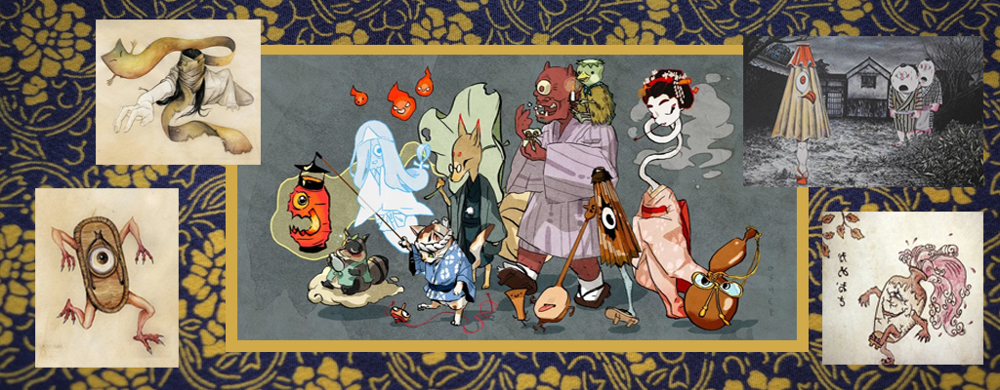
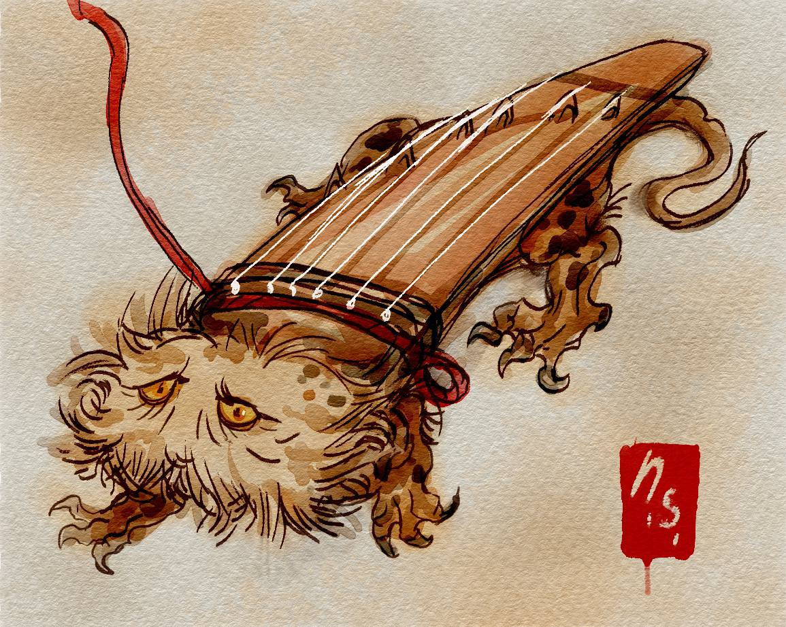
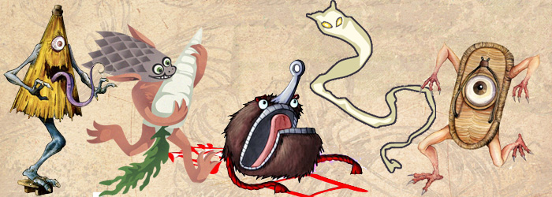

Цукумогами (яп. 付喪神 — «духи вещи») — разновидность японского духа: вещь, приобретшая душу и индивидуальность; ожившая вещь (хотя именно такое определение несколько спорно). Согласно поверьям японцев об этих духах (могами-эмаки), могами происходит от артефактов или вещей, которые существуют в течение очень длительного периода времени (от ста лет и более) и потому стали живыми или обрели сознание. Любой объект этого возраста, от меча до игрушки, может стать могами. Могами являются сверхъестественными существами, в отличие от заколдованных вещей. Также могами могут стать вещи, которые были забыты либо потеряны, — в этом случае для превращения в могами нужно меньше времени; такие вещи будут стараться вернуться к хозяину.
Появление тацукумогами в японском фольклоре датируется приблизительно X веком и является частью учения Сингон, согласно которому любая вещь обладает душой, но лишь старинные предметы могут проявлять свой характер.
Поскольку данный термин в японском фольклоре имел несколько различных значений, его происхождение трудно однозначно установить. Буквально слово «цукумогами» можно перевести как «волосы старой женщины», хотя некоторые учёные переводят его и как «прострел».
Цукумогами очень сильно различаются по своему внешнему виду — в зависимости от природы происхождения духа, то есть типа вещей, из которых они происходят. Их характер может различаться в зависимости от характера бывшего хозяина и эмоций, окружавших предмет. Некоторые — например, те, что происходят от бумажных фонарей или разорванной обуви, — могут иметь разрывы, которые становятся глазами и острыми зубами, придавая лицу жутковатый вид. Другие, такие как носимые чётки или чашки чая, могут выглядеть «тёплыми», доброжелательными. Характер каракаса-обакэ (оживший зонтик) будет сильно отличаться от характера ванигути (оживший храмовый гонг). Таким образом, нельзя однозначно охарактеризовать цукумогами как зловредного или доброго духа, так как, по сути, это лишь название целого класса духов.
Хотя они обычно считаются мистическими или легендарными существами из фольклора, большинство цукумогами с именами являются героями произведений, созданных во времена периода Эдо. Наиболее популярный художник Торияма Сэкиэн, и многие другие, добавили собственных созданий в список цукумогами. Народные описания цукумогами редки, но всё же существуют в некоторых сказках (например, Бакэмоно-дэра).
В XX веке цукумогами стали частью японской массовой культуры. Критики отмечают, что по большому счёту цукумогами безвредны и, как правило, не совершают чего-то более опасного, нежели случайные шалости, однако они имеют способность к гневу и могут объединиться, чтобы отомстить тем, кто расточительно обращался с ними или бездумно их выбросил. Чтобы избежать этого, и по сей день некоторые церемонии в дзиндзя выполняются с целью утешить сломанные и непригодные товары.
Самые известные: